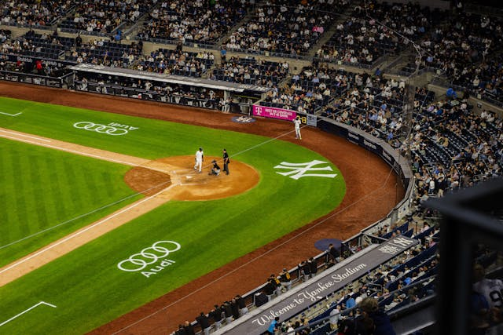
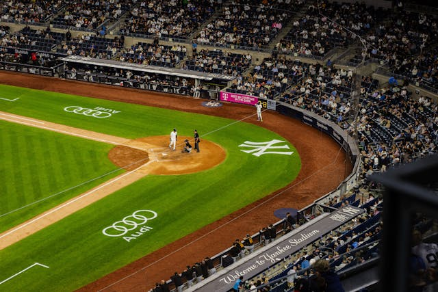
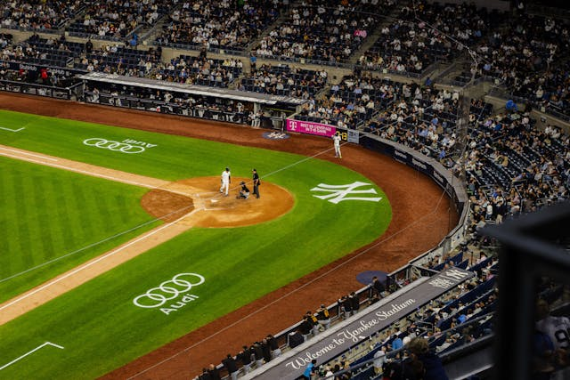
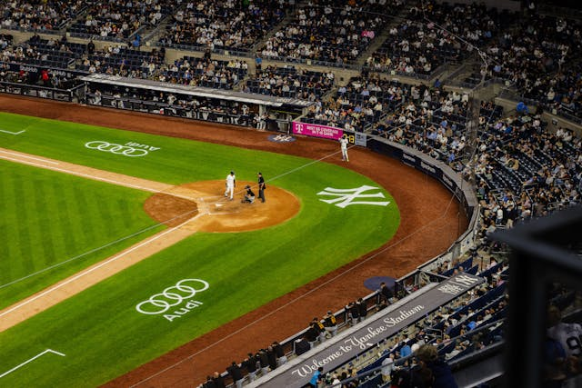

| Comparison of Boroughs by Size and Land Area |
||
|---|---|---|
| Borough | Population Size | Land Area |
| Manhattan | 1.6 million | 22.66 sq mi |
| Queens | 2.4 million | 108.7 sq mi |
| Brooklyn | 2.7 million | 69.38 sq mi |
| The Bronx | 1.5 million | 42.17 sq mi |
| Population and land area data collected from Wikipedia. | ||